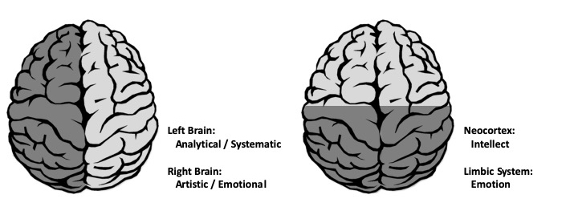
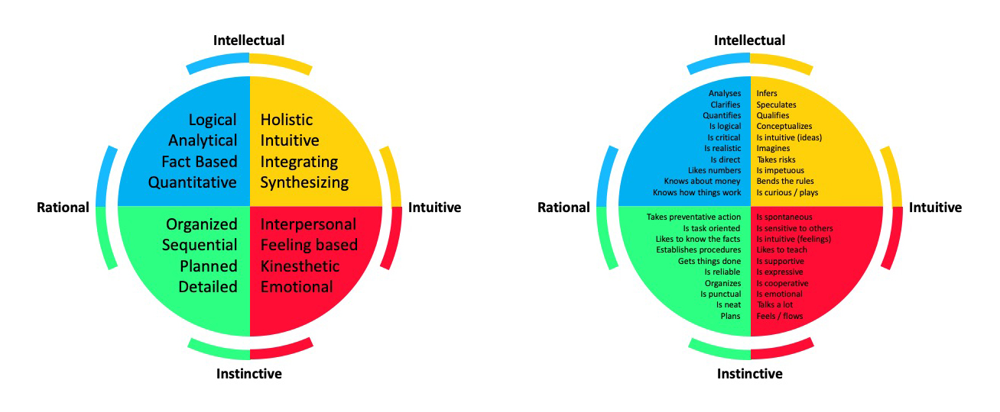
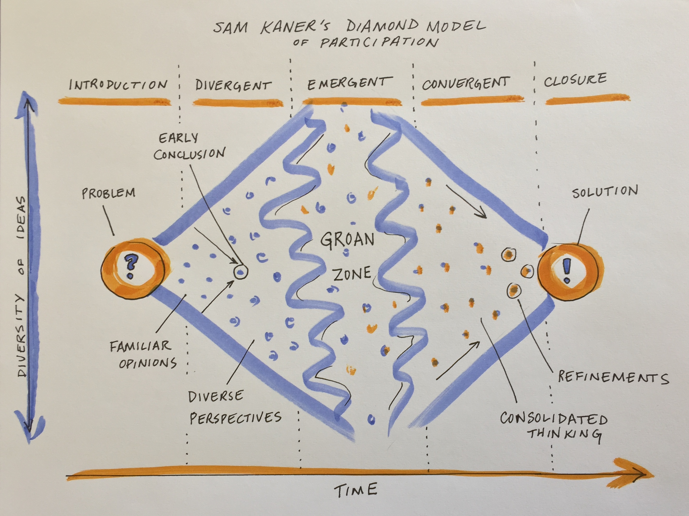

3 Team Science
3.1 Working as Part of a Team
3.1.1 Working in teams
Many aspects of the research enterprise today are collaborative and require you to work effectively as a member of a team. No matter their focus, highly effective teams share certain characteristics:
- Right size
- Diverse group of people with the right mix of skills, knowledge, and competencies
- Aligned purpose and incentives
- Effective organizational structure
- Strong individual contributions
- Supportive team processes and culture
3.1.2 Aligning for success
Coming to a shared definition of success and understanding of the project scope is critical. It may be useful to write a short manifesto that articulates what you are doing, why and how.
Once the purpose is clear, then you need a clear and regularly updated work plan and timeline that articulate the group’s work streams and the roles, responsibilities and tasks of group members. Explore team members’ motivations for being involved in the work and try to match assignments and roles to individuals’ interests, skills and incentives. What are their personal and professional rewards; what do they consider exciting or cutting edge? If you will be collaborating with individuals from across different sectors (e.g., academia, government, NGOs, private sector), consider how their performance is evaluated and rewarded in their institutions. Does all or some of the planned work align with what they get paid to do? If not, are there ways to still tap their expertise? Varying career goals of participants can help you to match people and tasks, e.g., lead authorship on papers is generally most motivating to pre-tenure scientists. Your group will be much more productive if you invite people to discuss their needs openly and honestly and design the work to help them satisfy those needs.
These tools can help support the articulation and tracking of responsibilities and timelines:
There are many free online templates available for these, as well as various project management software platforms. Whatever you use, make it accessible to all team members so everyone can record and track progress. It’s more important to select a system that the majority of your team members are likely to use than to choose the “best” tool. In many cases, this will mean using the tools that are already familiar. See also section 3.4 for more on collaboration tools.
3.1.3 Culture, structure, and leadership
The success of team science endeavors hinges on the ongoing cultivation of a good collaborative culture, and interactions early on help set expectations and direction. As an early career researcher, your influence over the culture of your team may be limited. Nonetheless, you can help create the conditions that will enable effective collaboration by developing systems and practices for regular interaction and communication, seeking input from collaborators, asking for and offering support, and dealing with conflicts directly rather than hoping they will go away. Where you are leading aspects of the project, e.g., as the lead author of a paper, you can create your own mini team culture.
Some elements of an effective collaborative culture include:
- Mutual respect, trust, and opportunities for social connection
- Clear norms and expectations, e.g., for how conflicts will be handled and how credit will be shared and attributed
- Clear data sharing and authorship guidelines: If your team spans diverse fields and/or sectors, members may have divergent perspectives, so it’s important to talk about this openly, early in the process, and revisit agreements regularly
- Equal opportunities for participation that welcome all voices and contributions
- Shared leadership: Each activity or task should have a clear objective and someone who is responsible for ensuring the group reaches that objective
3.1.3.1 Traditional and network mindsets
Collaborative work requires us to move in and out of what is known as a network mindset (versus a traditional mindset, which might apply, for example in a traditional lab setting or a solo project). It is the network mindset that sees the potential for “greater than the sum of the parts” solutions. Orienting from a network mindset we lean into uncertainty, trusting that useful outcomes may emerge from the collective intelligence of the network. Those outcomes include enhanced learning, new ideas, and new opportunities for collaborative research. It’s important to note, though, that there is a place for both the traditional and the network mindset. Neither is better than the other. The skill comes in knowing which is required and moving easily between them.
| Traditional Mindset | Network Mindset |
| Hierarchical | Horizontal |
| Firmly controlled and planned | Loosely controlled and emergent |
| Centralized authority | Distributed authority |
| Task oriented | Relationship oriented |
| Production of products and services | Cultivation of learning and activity |
| Strengthening individual efforts | Weaving connections and building networks |
| Proprietary information and learning | Open information and learning |
| Decision making concentrated | Decision making shared / transparent |
| Individual intelligence and achievement | Collective intelligence and action |
| Effectiveness linked to concrete outputs | Effectiveness also linked to intangibles (trusting relationships, information flows) |
| Credit claimed by individual or single organization | Credit shared with partners |
| Conflict averse | Conflict acknowledged and addressed |
Adapted from Monitor Institute & Rockefeller Foundation, ENGAGE
3.1.3.2 Resolving team conflict
Like all human endeavors, the research enterprise involves power and conflict. Many research organizations operate under a traditional hierarchical model, with power and decisionmaking authority increasing with rank. As an early career researcher, you’re near the bottom of that ladder. Power dynamics within research teams may also be affected by Implicit bias and systemic injustice towards people based on their age, gender, race, ethnicity, nationality, sexual orientation, physical ability or other characteristics. Discrimination or harrassment based on these or other differences should not be tolerated. If you have experienced, witnessed, or are otherwise knowledgeable of harassment or discrimination you should report it (see section below).
While discrimination and harassment are unacceptable, other forms of conflict are virtually inevitable within teams, and if handled successfully can actually benefit the collaboration. The ability to navigate conflict in healthy and constructive ways is a key characteristic of high functioning teams and critical to your career success.
Conflict emerges from differences among people - the same differences that can make diverse teams so effective. In order to take full advantage of the varying skills, experiences, and perspectives of our teams, we have to be open to those differences, learn how to share constructive differences of opinion, and resolve negative conflicts before they turn into full blown disputes.
Acknowledge the conflict
If you or your team are experiencing a conflict, the first step is to acknowledge (rather than ignore) that a negative conflict has emerged and then agree to a process for resolving the conflict that involves open communication with the person or people involved.
When describing the conflict and the impact it is having on you, focus on specific observable behavior and events, not on personalities or generalities. Say “When this happens, it has this impact on me.” Avoid making up a story about the other person or their motivations. Stay on “your side of the net.” Ask for their perspective, “What was going on with you?”
Crossing the net. Nick Stenning. Flickr
Understand the situation
Invite all parties to share their view of the situation. Take time to make sure everyone’s position is heard and understood. Work to get through the emotions to the true nature of the conflict. Listen carefully and ask questions to draw out the facts, assumptions, and beliefs behind each person’s position. Together, identify areas of agreement and disagreement until you have a shared understanding of the dispute. Prioritize which areas of conflict or disagreement are most important to address first. Encourage the parties involved to clearly state their requests and preferences.
Engage in joint problem-solving to find a resolution
Building on the shared understanding of the situation, decide together how to make things better. If the group decides more analysis or discussion is needed, agree on what that’s going to look like. Lay out roles, responsibilities and a timeline, and commit to both the joint problem-solving process and its outcome. Start with the most important conflict. Focus on the future with positive intent.
Tend the relationships, keep the communication flowing
Your work is not done when the conflict is resolved. You and other members took a risk in stepping into this process. Celebrate that bravery and its outcomes. Maintain open channels of communication to support ongoing trust building and the exchange of constructive differences of opinion. Cultivate opportunities for open and honest feedback among all team members.
3.1.3.3 Reporting harassment or discrimination
The National Science Foundation (NSF), which sponsors NEON, does not tolerate discrimination or harassment of any kind, within the Foundation, at awardee organizations, field sites, or anywhere NSF-funded science and education are conducted. The Office of Diversity and Inclusion (ODI, https://nsf.gov/od/odi/index.jsp) is responsible for the NSF Awardee Civil Rights Compliance Program and is committed to ensuring NSF awardees can learn and explore science without having to tolerate discrimination or harassment.
Individuals who wish to report harassment or discrimination should contact programcomplaints@nsf.gov, call (703) 292-8020, or mail to ODI. ODI will confirm receipt of communications within 48 business hours. ODI will also explain rights and responsibilities of the individuals and discuss possible next steps, such as filing a formal complaint.
Please note, ODI will take appropriate steps to protect the names and other personally identifiable information of individuals who submit reports of harassment or discrimination consistent with NSF policy as well as the Privacy Act, FOIA, and other applicable federal law. NSF awardees may not retaliate against individuals who report harassment or discrimination; file harassment or discrimination complaints; participate in a harassment or discrimination complaint; or participate in compliance review as a witness, interviewee and other protected activities.
3.1.3.4 Further reading
Bear, J.B. and Woolley, A.W., 2011. The role of gender in team collaboration and performance. Interdisciplinary science reviews, 36(2), pp.146-153.
Beier, P., Hansen, L.J., Helbrecht, L. and Behar, D., 2017. A how‐to guide for coproduction of actionable science. Conservation Letters, 10(3), pp.288-296.
Cheruvelil, K.S. and Soranno, P.A., 2018. Data-intensive ecological research is catalyzed by open science and team science. BioScience, 68(10), pp.813-822.
Cheruvelil, K.S., Soranno, P.A., Weathers, K.C., Hanson, P.C., Goring, S.J., Filstrup, C.T. and Read, E.K., 2014. Creating and maintaining high‐performing collaborative research teams: the importance of diversity and interpersonal skills. Frontiers in Ecology and the Environment, 12(1), pp.31-38.
Enquist, C.A., Jackson, S.T., Garfin, G.M., Davis, F.W., Gerber, L.R., Littell, J.A., Tank, J.L., Terando, A.J., Wall, T.U., Halpern, B. and Hiers, J.K., 2017. Foundations of translational ecology. Frontiers in Ecology and the Environment, 15(10), pp.541-550.
Hampton, S.E., Halpern, B.S., Winter, M., Balch, J.K., Parker, J.N., Baron, J.S., Palmer, M., Schildhauer, M.P., Bishop, P., Meagher, T.R. and Specht, A., 2017. Best practices for virtual participation in meetings: experiences from synthesis centers. The Bulletin of the Ecological Society of America, 98(1), pp.57-63.
Hampton, S.E. and Parker, J.N., 2011. Collaboration and productivity in scientific synthesis. BioScience, 61(11), pp.900-910.
Hampton, S.E., Jones, M.B., Wasser, L.A., Schildhauer, M.P., Supp, S.R., Brun, J., Hernandez, R.R., Boettiger, C., Collins, S.L., Gross, L.J. and Fernández, D.S., 2017. Skills and knowledge for data-intensive environmental research. BioScience, 67(6), pp.546-557.
Hong, L. and Page, S.E., 2004. Groups of diverse problem solvers can outperform groups of high-ability problem solvers. Proceedings of the National Academy of Sciences, 101(46), pp.16385-16389.
Micken and Rodgers. 2000. Characteristics of effective teams: A literature review. Australian Health Reviews.
National Academy of Sciences report, Enhancing the Effectiveness of Team Science https://www.nap.edu/catalog/19007/enhancing-the-effectiveness-of-team-science
National Cancer Institute Collaboration and Team Science: A Field Guide https://ccrod.cancer.gov/confluence/download/attachments/47284665/TeamScience_FieldGuide.pdf?version=2&modificationDate=1285330231523&api=v2
Parker, J.N. and Hackett, E.J., 2012. Hot spots and hot moments in scientific collaborations and social movements. American Sociological Review, 77(1), pp.21-44.
Turner II, B.L., Esler, K.J., Bridgewater, P., Tewksbury, J., Sitas, N., Abrahams, B., Chapin III, F.S., Chowdhury, R.R., Christie, P., Diaz, S. and Firth, P., 2016. Socio-Environmental Systems (SES) Research: what have we learned and how can we use this information in future research programs. Current opinion in environmental sustainability, 19, pp.160-168.
Why collaboration between NGOs and academics can be hard:http://oxfamblogs.org/fp2p/why-is-it-so-hard-for-academics-and-ngos-to-work-together/
Woolley, A.W., Aggarwal, I. and Malone, T.W., 2015. Collective intelligence and group performance. Current Directions in Psychological Science, 24(6), pp.420-424.
3.1.4 Thinking preferences
3.1.4.1 Learning Objectives
Typically designed as an interactive group activity or ice breaker for collaborative teams, this unit will introduce you to variation in thinking preferences, allows for self assessment and reflection, and provides an exercise that can be used in a group setting.
3.1.4.2 About the Whole Brain Thinking System
Everyone thinks differently. The way individuals think guides the way they work, and the way groups of individuals think guides how teams work. Understanding thinking preferences facilitates effective collaboration and team work.
The Whole Brain Model, developed by Ned Herrmann, builds upon our understanding of brain functioning. For example, the left and right hemispheres are associated with different types of information processing and our neocortex and limbic system regulate different functions and behaviors.

The Herrmann Brain Dominance Instrument (HBDI) provides insight into dominant characteristics based on thinking preferences. There are four major thinking styles that reflect the left cerebral, left limbic, right cerebral and right limbic.
- Analytical (Blue)
- Practical (Green)
- Relational (Red)
- Experimental (Yellow)

These four thinking styles are characterized by different traits. Those in the BLUE quadrant have a strong logical and rational side. They analyze information and may be technical in their approach to problems. They are interested in the ‘what’ of a situation. Those in the GREEN quadrant have a strong organizational and sequential side. They like to plan details and are methodical in their approach. They are interested in the ‘when’ of a situation. The RED quadrant includes those that are feelings-based in their apporach. They have strong interpersonal skills and are good communicators. They are interested in the ‘who’ of a situation. Those in the YELLOW quadrant are ideas people. They are imaginative, conceptual thinkers that explore outside the box. Yellows are interested in the ‘why’ of a situation.

Most of us identify with thinking styles in more than one quadrant and these different thinking preferences reflect a complex self made up of our rational, theoretical self; our ordered, safekeeping self; our emotional, interpersonal self; and our imaginitive, experimental self.
Undertsanding the complexity of how people think and process information helps us understand not only our own approach to problem solving, but also how individuals within a team can contribute. There is great value in diversity of thinking styles within collaborative teams, each type bringing stengths to different aspects of project development.

Exercise: Your Complex Self
Using the statements and guidance contained within this document, plot the quadrilateral representing your complex self.
Exercise: Thinking Preferences Activity
You can use the steps below to guide a group through a process of exploring their thinking preferences. This work well in an in-person setting but can also be achieve online using technology that includes breakout rooms.
Step 1: Don’t jump ahead in this document. (Did I just jinx it?)
Step 2: Review the list of statements here and reflect on your traits. Do you learn through structured activities? Are you conscious of time and are punctual? Are you imaginative? Do you like to take risks? Determine the three statements that resonate most with you and record them. Note the symbol next to each of them.
Step 3: Review the symbol key here and assign a color to each of your three remaining statements. Which is your dominant color or are you a mix of three?
Step 4: If in person, move through the space and talk to other team members about their dominant color statements. Keep moving until you cluster into a group of ‘like’ dominant colors. If you are a mix of three colors, find other group members that are also a mix. (If in a remote setting you can use the zoom breakout room feature to move between five pre-established breakout rooms).
Step 5: When the breakout groups/rooms have reached stasis, each group should note the name and dominant color of your breakout room.
Step 6: Take a moment to reflect on one of the statements you selected and share with others in your group. Why do you identify strongly with this trait? Can you provide an example that illustrates this in your life?
Step 7: Regroup and discuss your perspectives around Thinking Preferences
3.2 Working in an Inclusive Manner
We hope NEON postdocs will join us in making a lifelong commitment to helping foster justice, equity, diversity and inclusion (JEDI) in science and research, and to helping create and provide a safe, productive, and welcoming workplace environment for all people. JEDI issues in science touch all people, regardless of their race, ethnicity and background. It is therefore important for each individual to consider their roles and relationships with respect to these issues, and to consider to be a part of an inclusive and just culture of science and research.
Navigating a career path in science and research can be very challenging for individuals, especially when this is done alone, without a strong support network, and/or as someone from an underrepresented group. We thus recommend that you implement a few simple strategies that can help overcome both normal and extraordinary obstacles that you may encounter as you continue along this path:
- Consider ways to recognize bias (including personal bias) in science and the workplace
- Enroll in JEDI trainings or workshops (e.g., one provided by ADVANCE GEO) to gain skills and perspectives that are widely relevant to any career path
- Review collections of resources about JEDI in academic research (e.g., resources compiled by LTER and NCEAS), with a view towards actions that individuals and their extended communities can take to develop the strengths, skills, and relationships necessary to create fully inclusive learning and work environments. Categories of information in the LTER and NCEAS collections that may be especially relevant to NEON postdocs may include:
- LTER
- Understanding the problem in academia and ecology
- Creating an inclusive environment
- Mentoring
- Having difficult conversations
- Recruiting
- Funding
- Building community
- Evidence that diversity improves problem solving and creativity
- NCEAS (“Other General Resources” menu option)
- Diversity & inclusion
- Anti-racism resources
- Gender equity
- Resources for parents
- LTER
- Ask your advisor and/or your institution about its Code of Conduct for the workspace, including related to meetings, conferences, socializing, and more (e.g., see NCEAS’ Code of Conduct for its working group meetings). If one is not yet in place, request it to be produced (or co-produced with your input).
- Set SMART professional goals for yourself on 1, 2, and 5 year timescales, and be sure these goals address how justice, equity, diversity and inclusion can and will manifest through your work.
- Form a personal board including at least 3-4 people in your life who you trust and admire, who can provide diverse perspectives and experiences that can enlighten you, and who have demonstrated that they’re willing to provide advice when you need it. This board will prove valuable in many ways, including that you can seek their guidance and feedback related to JEDI issues.
- Find new ways to offer support and mentorship opportunities to others, including any colleagues who may not yet have a strong network of professional supporters and advisors. In addition to ‘paying it forward,’ practicing mentorship will help you develop leadership skills.

Open access image from https://pxhere.com/en/photo/1434697
3.3 Collaboration Practices
3.3.1 Developing a Code of Conduct
Whether you are joining a lab group or establishing a new collaboration, articulating a set of shared agreements about how people in the group will treat each other will help create the conditions for successful collaboration. If agreements or a code of conduct do not yet exist, invite a conversation among all members to create them. Consider both the behaviors you want to encourage and those that will not be tolerated.
The Openscapes Code of Conduct, for example, states: Be respectful, honest, inclusive, accommodating, appreciative, and open to learning from everyone else. Do not attack, demean, disrupt, harass, or threaten others or encourage such behavior. Check out these additional examples: NCEAS Code of Conduct, Carpentries Code of Conduct, Mozilla Community Participation Guidelines, Ecological Society of America Code of Conduct and the Battelle Code of Conduct linked in Section 1: Working at NEON.
We return to the following principles for collaboration over and over:
- Welcome and honor all voices, make space for equitable and genuine participation
- Listen for understanding, speak to be understood (in contrast to “predatory listening,” listening for the weakness in another’s argument)
- Stay open, curious, and committed to learning (as opposed to closed and committed to being right)
- Actively work to bridge across differences (e.g., unpack assumptions, avoid jargon, invite new perspectives)
- Bring humor
- Be flexible, go with the flow
- Move at the speed of trust (a core principle of the Black Lives Matter movement)
- Be present
- Trust that dialogue will take us deeper (and that struggle can be productive)
3.3.2 Designing and facilitating effective meetings
As humans, we are constantly coming together in groups for some common purpose. At our core, we are social animals, and our exceptional abilities to connect and collaborate may be among the main things that distinguish us as a species. So if meetings are just opportunities for groups of humans to connect and collaborate, why do so many of us find them so painful? Probably we are going about this the wrong way!
phd comics meetings - http://phdcomics.com/comics/archive.php?comicid=1752
Luckily there are simple things you can do to make your meetings more enjoyable and effective for everyone. They come down to thoughtful meeting design and effective facilitation. In general:
- Effective meetings have a clear purpose / goal.
- The outcomes or outputs you want to walk away with have been clearly articulated.
- The right people have been convened.
- Those people understand the purpose and objectives of the meeting.
- They understand their role, and they are ready to engage in the way that will best serve the collective purpose.
- The agenda for the meeting has been designed with the outcomes and outputs in mind.
- The format, facilities, and activities suit the agenda and purpose of the meeting.
- The format, facilities, and activities encourage and empower people to contribute fully and openly. Careful thought has been given to how their contributions will be harvested.
- People listen, participate, and take responsibility for leadership in ways that support other participants, the process, and progress.
- Actions and next steps are clearly described (including roles, responsibilities, timelines, definition of success) and taken up by participants.
- Progress (during and after the meeting) is reviewed, tracked, and communicated.
- Everyone is invited to review progress / success and feed learning back in to improve future meetings and ongoing work of the team.
3.3.2.1 Designing for long term success
What are we trying to achieve when we design and facilitate a team science meeting?
First, we are working to build and sustain a coalition of the willing – a group of people united in shared purpose, willing to contribute.
Second, we want to foster creativity. When faced with complex problems without obvious solutions, we need to invite new ideas from all quarters and create the conditions where innovation and unconventional thinking are welcomed. We cannot know ahead of time where good ideas will come from.
Third, we want results, so we need to create a really productive environment. The key to that productivity is good communication. And, despite the fact that many academics have been trained to rely on critical debate to defend and refine their ideas, the style of communication that is most effective for interdisciplinary problem-solving is dialogue. Dialogue is covered in more depth below.
Finally, in most team science endeavors, we can and should also be designing for future collaborative potential. These people are part of your professional network and could become lifelong collaborators. How do you build and sustain a pool of collaborators who can become part of your future coalitions of the willing for new projects?
3.3.2.2 The value of planning
Good meeting design starts with understanding your purpose and objectives. Once you understand why you need to meet (your overarching goal) and what you want to accomplish (the specific outcomes you are driving toward), you can turn to how you will accomplish your purpose (i.e. the agenda design) and who will play what roles. A good rule of thumb is to allow 2-3x as much time to plan a meeting as its duration.
why, what, how, who
If you are at the start of a collaborative project, your initial meeting(s) should seek to establish (1) refined questions, goals and objectives; (2) an engaged team with a clear sense of the overall vision and next steps; (3) a clear work plan with timelines, roles and responsibilities; and (4) a plan for communication and coordination of work between meetings (and ideally, the dates for your next meeting).
Take a team approach to both planning and running meetings.
3.3.2.3 Meeting facilitation
When it’s your turn to facilitate a meeting, give some thought to where facilitation will likely be needed. Where do you anticipate potential logjams or sticking points? Where have you seen the group get stuck in the past? Are there personalities or relationships in the group that may require mediation, e.g., individuals that tend to dominate conversation or take the group off course? How will you encourage connection and creativity with this particular group? Who can you count on to help you ensure the meeting runs smoothly?
3.3.2.5 Dialogue as the container for collaboration
Team science benefits from the diverse perspectives and ideas of researchers coming together to generate novel ideas. The flow of new ideas is supported by rich, inclusive dialogue. In contrast to debate or discussion, dialogue allows groups to recognize the limits on their own and others’ individual perspectives and to strive for more coherent thought. Dialogue becomes a container for collective thinking and exploration – a process that can take teams in directions not imagined or planned.
In discussion, different views are presented and defended, and this may provide a useful analysis of the whole situation. In dialogue, all views are treated as equally valid, and different views are presented as a means toward discovering a new view. Participants listen to understand one another, not to win. In a skillful discussion, decisions are made. In a dialogue, complex issues are explored and shared meaning is created. Both are critical to the collaborative process, and the more artfully a group can move between these two forms of discourse (and out of less productive debate and polite discussion) according to what is needed, the more effective the group will be.
Adapted from the work of Peter Senge
Agreements or principles can help enable dialogue. (See list of potential agreements in the resources section). Challenge participants to speak to be understood, rather than to win a point, and listen for understanding, rather than for the weakness in another’s argument. Put a premium on defining terms, unpacking assumptions, and explaining thinking to bridge diverse disciplinary perspectives. Opportunities to build social cohesion and human connection also support dialogue. These could take the form of icebreakers or other exercises that invite people to connect on a personal level. Or they could be informal activities like coffee breaks, field trips, sports, or group dinners that offer opportunities for people to get to know each other and build connections.
3.3.2.6 Techniques for democratizing participation
Remember that your goal is to enable the full participation of all group members so you can tap their diverse perspectives and catalyze creative problem-solving. To do this, you want to thoughtfully work to democratize participation so that a few voices don’t dominate discussion.
A few simple techniques can help:
- For in person meetings, ask people to stand a tent card on end or raise their hand to indicate when they want to speak. Have someone track the order they go up and call on people in order. For virtual meetings, you can have people raise their hand or put their name in the chat to indicate they want to speak
- Regularly invite, amplify and credit the contributions of quieter participants and those who may have less power in the group
- Allow time for silent reflection before inviting discussion. Pose a specific question or prompt
- Mix up the discussion format throughout the meeting - pairs, small groups, plenary
- Provide opportunities for small groups to go off and work and then report refined ideas back to the group
Some facilitators will offer tips for dealing with “difficult” personalities or communication styles, but how difficult someone else appears is in the eye (or ears) of the beholder and will depend on the situation. Be aware of your own biases toward or against particular communication styles. Attend to the dynamics of the group and intervene when needed to make sure the team’s energy is directed toward meeting its goals. And use the tips and tools offered above, and the models described below, to democratize participation and help all participants to be as constructive as possible.
3.3.2.7 The Four Player Model
A useful tool for reading the dynamics of the room comes from David Kantor, a family psychologist who has studied interpersonal communication for many years. Kantor analyzed the speech acts (statements or questions) in thousands of conversations among family members and other groups. He concluded that in any conversation, there are four primary speech acts that people will make: Move, Follow, Oppose, or Bystand.
When someone moves, they are taking the lead, making a suggestion, proposal or positing an idea. If someone chooses to follow, they affirm or agree with that idea. Someone else may choose to oppose the idea by offering criticism or counter-evidence or withholding support. Others may bystand by neither following nor opposing, but instead adding information that comes from a different point of view.
World Cafe, Flickr
As the conversation unfolds, other moves will be made, and the participants may play different roles, though most of us feel more comfortable with some types of speech acts than others. All four types are valuable and necessary for moving a group forward. Conversations that don’t involve a balance of all four can indicate a counterproductive group dynamic.
As a facilitator, speech act patterns can yield insights into group dynamics and help you figure out your next move. Start listening. A group that is caught in a pattern of counterpoint – of move-oppose-move-oppose – may be trapped in debate or power struggle. As the facilitator, try asking a question that would invite a follow, such as “Who’s onboard with this idea?” or “Is there any part of what you’ve heard that you can agree with?” Or invite a bystand: “What do you notice about what’s happening in the room right now?” In a different group you may observe that an initial move is followed by a string of bystand comments or questions. For a complex issue this may be appropriate, but the group may be getting caught in “analysis-paralysis.” It might be time to invite either a follow (“Can you support this?”) or an oppose (“What could go wrong?”).
3.3.2.8 The Groan Zone (aka the Diamond Participation Model)
As researchers and practitioners engaged in transdisciplinary problem-solving, we know the value of diverse perspectives. We also know how common it is for groups to run into challenges when trying to learn from diverse ideas and come to consensus on creative solutions.
This challenging, often uncomfortable space, is called the groan zone. The term comes from Sam Kaner’s diamond model of participation shown in the figure below. After an initial period of divergent thinking, where diverse ideas are introduced, groups have to organize that information, focus on what’s most important, and make decisions in order to move forward into the phase of convergent thinking.
Navigating that transition between divergent and convergent thinking is the realm in which creativity and innovation emerge, if we let them. Groups that avoid the groan zone and converge too early may settle for status quo solutions. Other groups never make it out of the groan zone and fail to converge on a solution.

Inviting diverse perspectives (divergence), synthesizing to yield new breakthroughs (emergence), and coalescing around a shared vision for how to move forward (convergence) are fundamental elements of successful collaboration, and they don’t just happen once. In fact, a well-designed collaboration will move through these stages over and over again.
In the arc of a project, a group may encounter the groan zone at multiple scales – within an individual discussion, midway through a multi-day meeting, part way through a multi-year project, or all of the above. Group participants often report that their satisfaction ebbs in the messy middle of their project, but rises again as the project approaches the end.
Don’t Panic: Half the battle is recognizing that you are entering the groan zone. Just naming the transition from divergence to convergence as a distinct, valuable, and normal phase can help to reassure a group. Recognizing that the groan zone is inevitable, our best option is to embrace it and let it spark opportunities for the emergence of novel ideas. The right tools (discussed below) can support that.
3.3.2.9 Tools to support divergent and emergent thinking
When a diverse group comes together to work on a complex problem, their views are likely to diverge widely across many dimensions from problem definition to priorities to methods/approaches to the definition of success. But you can tap that divergent thinking to generate entirely new ideas and options that emerge through the group’s productive struggle for mutual understanding.
While your working group is in the divergent thinking stage, it’s critical to foster dialogue to surface different perspectives. Examine hidden assumptions. Create room for disagreement and questioning. Amplify diverse perspectives in order to expand the range of possibilities. Suspend judgment and encourage full participation.
Be creative and empathetic when you design your agenda. Think about your participants and what is going to help all of them participate fully and creatively. Here are a few techniques and microstructures we have found useful in the divergent and emergent stages of a process.
World Cafe, Flickr
- Round robins, e.g. to get starting positions out on the table and hear from everyone
- 1,2,4,all to allow everyone’s participation and elevate themes and key insights (format goes from individual to small group to whole group discussion)
- Sticky note brainstorming + clustering
- Rotating stations
- World Cafe conversations
- Panel discussion or User Experience Fishbowl to explicitly draw out and contrast different expert perspectives
- Parallel breakout groups (be sure to allow time for report out and suggest a structure so that process can be efficient and informative)
- Scribing to capture participant’s viewpoints
- Encouraging and drawing out people, mirroring and validating what they say
- See other ideas in the Creative Problem Solving (CPS): Divergent Tools Quick Reference from Omni Skills linked below in Resources
In the groan zone, the working group leader and/or facilitator’s job is to keep the group from getting frustrated and shutting down. Some useful techniques for this stage include:
- Separating facts and opinions
- Creating categories to reveal structure and allow sorting and prioritization
- Carefully examining language, e.g. by looking word by word at a key statement or question that is being debated and asking what questions each word raises
- Capturing side issues and reserving time to revisit these
- Examining how proposed ideas might affect each individual in the group
- Honoring objections to the process and asking for suggestions
Image from Ragesoss on Wikimedia Commons Creative Commons – Attribution 3.0
3.3.2.10 Making thinking visible
Remember that there are many different ways that people learn. Encourage group members to synthesize and feed back the information that is being discussed in different ways to enhance understanding and learning. Visual tools - including written notes and graphics or drawings - can be a helpful complement to oral discussion.
Consider using: - Shared notes, e.g. in google docs - Scribing on a flipchart or whiteboard - Grids to organize information and compare - Conceptual models to articulate shared understanding of complex systems - Manifestos, abstracts and other written collateral to distill ideas
When capturing notes, try to use people’s own words; if necessary ask them to distill long or complex points into a headline you can capture. Invite them to offer corrections if you didn’t capture what they meant.
3.3.2.11 Techniques to support convergent thinking (i.e., getting to agreement)
Coming to a clear decision can sometimes be the hardest work of a collaboration. Use tools and frameworks to help your group converge in its thinking.
- Clarify your decisionmaking process up front. Are you trying to reach full consensus within this group or does majority rule? Or is this a decision that will be made by an individual or small group, based on the larger group’s input? If you are seeking consensus but can’t reach it, what’s your fallback plan? Clarifying how you will make decisions can help you avoid one of the worst pitfalls of collaboration - never making them.
- Co-create conceptual frameworks to organize ideas and draw connections. Constructing a visual model together helps to reveal the different ways individuals think about the problem, which can build a shared understanding of it and unlock new ways of addressing it. Joint model building supports metacognition, raising awareness of individual assumptions, gaps, and biases.
- Make specific proposals. Get the ideas on paper. Give each idea a headline and write a short abstract that distills the problem, why it’s important, and your proposed solution. Review each other’s ideas. Identify areas of confusion or uncertainty. Clarify language.
- Specify your criteria for convergence. A simple two-axis plot can help a group decide how to focus its effort. For example, as shown in the figure below, you might assess each idea for its feasibility and potential impact, and then focus on those scoring high in both. Defining what you mean by feasibility and impact before your start scoring is essential and can be another source of collaborative learning.
- Assess support for proposals, e.g. by using a gradient of agreement
Kaner Gradient of Agreement-Adapted (TRG, 2017) and (Hughes, 2017)
- Prioritize by identifying your Top five or using Dot voting
- Be realistic about constraints / barriers using Gut check
- See other ideas in the Creative Problem Solving (CPS): Convergent Tools Quick Reference from Omni Skills linked below in Resources
3.3.3 Authorship and Credit
Navigating issues of intellectual property and credit can be a challenge, particularly for early career researchers. Open communication is critical to avoiding misunderstandings and conflicts. Talk to your coauthors and collaborators about authorship, credit, and data sharing early and often. This is particularly important when working with new collaborators and across lab groups or disciplines which may have divergent views on authorship and data sharing. If you feel uncomfortable talking about issues surrounding credit or intellectual property, seek the advice or assistance of a mentor to support you in having these important conversations.
The “Publication” section of the Ecological Society of America’s Code of Ethics is a useful starting point for discussions about co-authorship, as are the International Committee of Medical Journal Editors guidelines for authorship and contribution. You should also check guidelines published by the journal(s) to which you anticipate submitting your work.
For collaborative research projects, develop an authorship agreement for your group early in the project and refer to it for each product. This example authorship agreement from the Arctic Data Center provides a useful template. It builds from information contained within Weltzin et al (2006) and provides a rubric for inclusion of individuals as authors. Your collaborative team may not choose to adopt the agreement in the current form, however it will prompt thought and discussion in advance of developing a consensus. Some key questions to consider as you are working with your team to develop the agreement:
- What roles do we anticipate contributors will play? e.g., the CASRAI CRediT project identifies 14 distinct roles:
- Conceptualization
- Data curation
- Formal Analysis
- Funding acquisition
- Investigation
- Methodology
- Project administration
- Resources
- Software
- Supervision
- Validation
- Visualization
- Writing – original draft
- Writing – review & editing
- What are our criteria for authorship? (See the ICMJE guidelines for potential criteria)
- Will we extend the opportunity for authorship to all group members on every paper or product?
- Do we want to have an opt in or opt out policy? (In an opt out policy, all group members are considered authors from the outset and must request removal from the paper if they don’t want think they meet the criteria for authorship)
- Who has the authority to make decisions about authorship? Lead author? PI? Group?
- How will we decide authorship order?
- In what other ways will we acknowledge contributions and extend credit to collaborators?
- How will we resolve conflicts if they arise?

3.3.4 Data Policies
As with authorship agreements, it is valuable to establish a shared agreement around handling of data when embarking on collaborative projects. Data collected as part of a funded research activity will typically have been managed as part of the Data Management Plan (DMP) associated with that project. However, collaborative research brings together data from across research projects with different data management plans and can include publicly accessible data from repositories where no management plan is available. For these reasons, a discussion and agreement around the handling of data brought into and resulting from the collaboration is warranted. Management of new data may benefit from going through a data management planning process, and this is covered further in section 6. Below we discuss example data agreements.
The example data policy template provided by the Arctic Data Center addresses three categories of data.
- Individual data not in the public domain
- Individual data with public access
- Derived data resulting from the project
For the first category, the agreement considers conditions under which those data may be used and permissions associated with use. It also addresses access and sharing. In the case of individual, publicly accessible data, the agreement stipulates that the team will abide by the attribution and usage policies that the data were published under, noting how those requirements we met. In the case of derived data, the agreement reads similar to a DMP with consideration of making the data public; management, documentation and archiving; pre-publication sharing; and public sharing and attribution. As research data objects receive a persistent identifier (PID), often a DOI, there are citable objects and consideration should be given to authorship of data, as with articles.
The following example lab policy from the Wolkovich Lab combines data management practices with authorship guidelines and data sharing agreements. It provides a lot of detail about how this lab approaches data use, attribution and authorship. For example:
Section 6
If you agree to take on existing data you cannot offer co-authorship for use of the data unless four criteria are met:
- The co-author agrees to (and does) make substantial intellectual contribution to the work, which includes the reading and editing of all manuscripts on which you are a co-author through the submission-for-publication stage. This includes helping with interpretation of the data, system, study questions.
- Agreement of co-authorship is made at the start of the project.
- Agreement is approved of by Lizzie.
- All data-sharers are given an equal opportunity at authorship. It is not allowed to offer or give authorship to one data-sharer unless all other data-sharers are offered an equal opportunity at authorship—this includes data that are publicly-available, meaning if you offer authorship to one data-sharer and were planning to use publicly-available data you must reach out to the owner of the publicly-available data and strongly offer equivalent authorship as offered to the other data-sharer. As an example, if five people share data freely with you for a meta-analysis and and a sixth wants authorship you either must strongly offer equivalent authorship to all five or deny authorship to the sixth person. Note that the above requirements must also be met in this situation. If one or more datasets are more central or critical to a paper to warrant selective authorship this must be discussed and approved by Lizzie (and has not, to date, occurred within the lab).
3.3.4.1 Policy Preview
This policy is communicated with all incoming lab members, from undergraduate to postdocs and visiting scholars, and is shared here with permission from Dr Elizabeth Wolkovich.
3.4 Skills and Tools for Reproducible and Team Science
3.4.1 Why collaborating in a reproducible manner
This section is an overview of skills and tools that will enable you to collaborate in a reproducible manner. There are many reasons why it is essential to make your science reproducible and how the necessity of openness is a cornerstone of the integrity and efficacy of the scientific research process. Here we will be focusing on why making your work reproducible will empower you to iterate quickly, integrate new information more easily, scale your analysis to larger data sets, and better collaborate by receiving feedback and contributions from others, as well as enable your “future self” to reuse and build from your own work. Some of the concepts will be further discussed in the Reproducible Research Techniques chapter of this book, where you will learn more about the tools and techniques you can use to make your data analysis reproducible.
3.4.2 Collaborative tools
Goal: to create a space for you to collaborate and centralize the information of your projects.
During your postdoctoral project(s), you will likely be working with collaborators from various organizations. These collaborators will most likely be using a variety of tools to do their work. However not everybody on the project might have access to those tools, making it difficult to share information, such as communications, documents, data or codes. It is thus important from the beginning of the project to think about how the information will be shared efficiently among the team members and how to centralize it. Here are a few tools we think will be essential to foster your collaboration as a distributed team:
- Document sharing: we recommend setting up a shared drive (e.g., Box, Google Drive, …) where you can centralize the documents that your team will be gathering and producing. This solution needs to be accessible to everyone on the team (independently of their institution). Each solution as its pros and cons and the decision should be based on the solution your collaborators and yourself are comfortable with, as well as making sure that everyone on the team will be able to access it. From our experience at NCEAS, Google Drive has a large user base and can be setup with very open sharing settings. This can be useful if you plan to share document beyond your team members. See here for NCEAS’ recommendations on how to use
Google Drivein a collaborative setup. - Team Communication: The tools used to communicate between collaborators will be function of how you are collaborating: synchronously or asynchronously (see Section on Virtual collaboration for more on this).
For asynchronous communication, we recommend setting up a mailing list (e.g.Google Groups) that let you reach all team members at once. We recommend adding a specific tag to the subject line of the mailing list to enable collaborators to set up filters for your project in their inbox. For faster communication while working together at the same time, chat rooms have proven to be a very efficient way to exchange ideas quickly and answer questions collaboratively. As an example of potential tools,Slackhas become a very popular tool that is pretty intuitive to learn (see here for an introduction).
Meetings, in-person or virtual, will also be an important way to communicate and work with your collaborators. Please refer to the Virtual Collaboration section of this book to learn more about how to run them efficiently.
- Coding together: We recommend using version control tools such as
gitandGitHub(or similar such asGitLab) to share code. Those tools are designed to track changes and who has implemented them. It creates a history of changes that you can navigate back to retrieve previous versions. This is a great way to share and to document your work. Note that those tools also have features to discuss modifications to your code, such as new features or bugs. See here for GitHub issues, as an example. There is a comprehensive introduction togitandGitHuband how to best use them in the Data Science chapter of this onboarding material.
Few criteria to ask yourself to help to pick the right tool:
- Can everybody have access to this tool? This should overrule the “best” tool => maximize adoption
- What team practices should you set on how to use these tools? Example: sharing a new document – prefer adding documents to the shared drive and send the link rather than sending it as an attachment
- Allow flexibility – acknowledge the technological level varies among collaborators. Empower them by showing how to best use these tools rather than doing it for them!
3.4.3 Data Management
You are starting at the right place as you will be working with NEON data! NEON data sets are well documented, archived, and made publicly available in a curated data repository (https://data.neonscience.org/). However, you might have to combine NEON data with other ancillary data sets that could be less documented and harder to discover or obtain.
We thus strongly recommend planning ahead and develop a Data Management Plan as you are starting your project. This will help you to plan for:
- What are the various steps needed before you can start your analysis?
- How much data will be collected and aggregated together?
- Who is going to do what?
- Estimate how long it will take to organize and process the data (tip: it is frequent to underestimate the time needed to accomplish complex tasks; Hofstadter’s law)
- Are there any legal constraints associated with acquiring, using, and sharing project data? E.g. survey data involving personal information
- At the end of your project, where would your products (data produced, codes, …) be archived? You will learn more about data repository and the archiving your products later in this book
Figure 3.1: Credits: DataONE data management; Friedrich Recknagel and William K. Michener. “Ecological Informatics”, 2017
DataONE has developed several great resources to help scientists with their data management. Here is the document we recommend to help you to get started: https://dataoneorg.github.io/Education/bp_step/plan/
A few more thoughts related to managing data in a collaborative setup:
- Centralize the management of your data
Try to avoid having data sets spread among laptops or other personal computers; this makes it difficult for other team members to redo a particular analysis and it can become difficult to know which version of the data was used for a specific analysis. We recommend asking your institution if there are servers or cloud services available to you and use those tools to centralize your data management. This will also make sure that all your collaborators will be able to access the same version of the data using the same path. - Develop naming conventions for files and folder:
- Avoid spaces (use underscores or dashes)
- Avoid punctuation or special characters
- Try to leverage alphabetical order (e.g. start with dates: 2020-05-08)
- Use descriptive naming (metadata)
- Use folders to structure/organize content
- Keep it simple
- Make it programmatically useful:
- Useful to select files (Wildcard
*, regular expression) - But don’t forget Humans need to read file names too!!
- Useful to select files (Wildcard
Example:
Which filename would be the most useful?
06-2020-08-sensor2-plot1.csv2020-05-08_light-sensor-1_plot-1.csvMeasurement 1.csv
Answer: 2020-05-08_light-sensor-1_plot-1.csv because the date will sort the file in order by default and the consistent usage of - and _ will let you split the filename into useful information.
The most important for filenames is to be consistent among collaborators and over time. To know more about this topic, here is a good reference from Jenny Bryan (RStudio).
3.4.4 Scientific programming for reproducible research
To make your data-riven research reproducible, it is important to develop scientific workflows that will be relying on programming to accomplish the necessary tasks to go from the raw data to the results (figures, new data, publications, …) of your analysis. Scripting languages, even better open ones such as R and python, are well-suited for scientists to develop reproducible scientific workflows. Those scripting languages provide a large ecosystem of libraries (also referred to as packages or modules) that are ready to be leveraged to conduct analysis and modeling. The Reproducible Research Techniques chapter of this onboarding document will introduce how to use R to develop such workflows.

Figure 3.2: Workflow example using the tidyverse. Note the program box around the workflow and the iterative nature of the analytical process described. Source: R for Data Science https://r4ds.had.co.nz/
We recommend shying away from spreadsheets as an analytical tool, as well as Graphical User Interfaces (GUI) where you need to click on buttons to do your analysis. Although convenient for data exploration, GUI will limit the reproducibility and the scalability of your analysis as human intervention is needed at every step. Spreadsheets can be useful to store tabular data, but it is recommended to script their analysis, as copy-pasting and references to cells are prone to mistake (see Reinhart and Rogof example. It is also very difficult to track changes and to scale your analysis using spreadsheets. In addition, auto-formatting (number, date, character, …) can silently introduce modifications to your data (e.g. One in five genetics papers contains errors thanks to Microsoft Excel ).
3.4.4.1 Scripting languages
Compared to other programming languages (such as C, fortran, …), scripting languages are not required to be compiled to be executable. One consequence is that, generally, scripts will execute more slowly than a compiled executable program, because they need an interpreter. However, the more natural language oriented syntax of scripts make them easier to learn and use. In addition, numerous libraries are available to streamline scientific analysis.
Don’t start coding without planning!
It is important to stress that scientists write scripts to help them to investigate scientific question(s). Therefore scripting should not drive our analysis and thinking. We strongly recommend you take the time to plan ahead all the steps you need to conduct your analysis. Developing such a scientific workflow will help you to narrow down the tasks that are needed to move forward your analysis.
Structure of a script
A script can be divided into several main sections. Each scripting language has its own syntax and style, but these main components are generally accepted:
From the top to the bottom of your script:
- Summary explaining the purpose of the script
- Attribution: authors, contributors, date of last update, contact info
- Import of external modules / packages
- Constant definitions (g = 9.81)
- Function definitions (ideally respecting the order in which they are called)
- Main code calling the different functions
A few programming practices that will help a long way
- Comment your code. This will allow you to inform your collaborators (but also your future self!) about the tasks your script accomplishes
- Use variables and constants instead of repeating values in different places of the code. This will let you update those values more easily
- Choose descriptive names for your variables and functions, not generic ones. If you store a list of files, do not use
xfor the variable name, use insteadfiles. Even better useinput_filesif you are listing the files you are importing. - Be consistent in terms of style (
input_files,inputFiles,…) used to name variables and functions. Just pick one and stick to it! keep it simple, stupid(KISS). Do not create overly complicated or nested statements. Break your tasks in several simple lines of code instead of embedding a lot of executions in one (complicated line). It will save you time while debugging and make your code more readable to others- Go modular! Break down tasks into small code fragments such as functions or code chunks. It will make your code reusable for you and others (if well documented). Keep functions simple; they should only implement one or few (related) tasks
Don’t Repeat Yourself(DRY). If you start copy/pasting part of your code changing a few parameters => write a function and call it several times with different parameters. Add flow control such as loops and conditions. It will be easier to debug, change and maintain- Test your code. Test your code against values you would expect or computed with another software. Try hedge cases, such as NA, negative values, ….
- Iterate with small steps, implement few changes at a time to your code. Test, fix, and move forward!
We hope this overview section about scientific programming has raised your interest in learning more about best practices and tools for developing reproducible workflows using scripting languages. As mentioned above, the Reproducible Research Techniques chapter of this onboarding material will go into more details about the R programming language and how it can be leveraged to produce data-driven and reproducible research.
3.4.5 Further reading
Here are a few selected publications to help you to learn more about these topics.
- Data and scientific workflow management:
- Some Simple Guidelines for Effective Data Management:
https://doi.org/10.1890/0012-9623-90.2.205 - Basic concepts of data management: https://www.dataone.org/education-modules
- Good enough practices in Scientific Computing:
https://doi.org/10.1371/journal.pcbi.1005510 - Script your analysis: https://doi.org/10.1038/nj7638-563a
- Some Simple Guidelines for Effective Data Management:
- Open Science:
- The Tao of open science for ecology:
https://doi.org/10.1890/ES14-00402.1 - Challenges and Opportunities of Open Data in Ecology:
https://doi.org/10.1126/science.1197962
- Scientific computing: Code alert
https://doi.org/10.1038/nj7638-563a - Our path to better science in less time using open data science tools
https://doi.org/10.1038%2Fs41559-017-0160 - FAIR data guiding principles
https://doi.org/10.1038/sdata.2016.18 - Skills and Knowledge for Data-Intensive Environmental Research https://doi.org/10.1093/biosci/bix025
- Let go your data
https://doi.org/10.1038/s41563-019-0539-5
- The Tao of open science for ecology:
3.5 Virtual Collaboration
3.5.1 Introduction
Collaborating virtually is an important part of modern research. We’ve all been thrown into virtual collaboration due to the COVID pandemic, but it was important prior and will continue to be in the future – likely more so. Whether it’s with close colleagues from your local research group or new contacts from across the world, being able to collaborate virtually is a huge part of supporting people and increasing inclusion in research. And, the virtual environment provides new opportunities for reframing gatherings to prioritize people and connection over old rules or forms.
This chapter focuses on virtual meetings, with points that are as relevant for one-on-ones as for meetings with many participants. Later on we’ll describe considerations for synchronous and asynchronous collaboration that complement virtual meetings but build from the points below.
3.5.2 Set an inclusive tone
In virtual meetings it is critical to set an inclusive tone from the very beginning. This begins with having a clear purpose or goals for the event.
Welcome. Schedule time at the very beginning to welcome folks, announce the meeting goals, and explain how to participate via community norms and software. Community norms for participation can be stated by summarizing the code of conduct and outlining shared expectations for the meeting. Participating with software can include tips about how to unmute microphones, use the chat, and write in a shared document. A good strategy to help earn buy-in and participation is to begin with a short roll call and icebreaker question that makes folks less anonymous and buffers time to accommodate connectivity issues.
Agenda. All meetings should have an agenda, the detail of which should match the weight of the meeting to maximize the time invested by all participants. When convening folks that don’t often meet, having a detailed agenda with specific minutes allotted to different topics (including the welcome!) is key. It should be designed to structure productive conversations while also providing enough flexibility to explore additional topics and strengthen relationships. If possible, the agenda should be shared ahead of time. If it’s a regular meeting, use the same document for each convening, putting the most recent date at the top of the document and take advantage of headers and table of contents to reduce scrolling. For low-key meetings with close collaborators, a time-allotting agenda might be less necessary but having clear shared expectations of process and outcomes can still be important.
Multiple communication channels. Having multiple communication channels for folks to “speak up” during the meeting is important for underrepresented minorities, students, and early career people, as well as international or multi-lingual participants. Having multiple communication channels provides ways for folks to connect and catch up if folks join the call late or drop off due to connectivity issues. If you’re using a shared document, writing feedback instead of verbalizing it can save time and also be used for side and asynchronous conversations.
Modeled behavior. Note that your behavior is a model for others and can have a big impact in setting the tone, particularly if you are a meeting lead or facilitator. A common pitfall of virtual meetings is that they are under-hosted or under-facilitated. Because we lack a lot of the contextual clues that we could get through language and space in virtual meetings, it is critical that there is orientation and modeled behavior to set the tone – a generous authority. See also the meeting facilitation chapter.
3.5.3 Provide robust documentation
Documenting topics covered and decisions made during meetings is critical for reproducibility and inclusion – recurring themes for collaborative research in virtual or physical spaces, as well as a hybrid of the two.
Meeting notes. Since people can log off from meetings with different perceptions and expectations, documentation can help keep people on the same page. Plus, documentation helps folks revisit ideas and action items, whether they were present at that meeting or not. Write meeting notes in a document—preferably in the agenda document mentioned above.
Collaborative software. Use collaborative document software such as Google Docs so that folks can take live notes together. Invite and teach participants how to contribute, and give them opportunities to get into the rhythm early on. For example, a written roll call at the beginning of the meeting invites people to be hands-on and can serve as a time buffer as folks arrive at the start.
Shared effort. Co-creating shared notes helps keep participants actively engaged. It also will result in a record of the meeting that is less brittle than anything produced by a single designated note-taker and will include more voices. Folks can contribute in many ways (including adding links, comments, +1’s to affirm others’ ideas, and emojis to provide quick emotion and color). Further, people can contribute to shared documents live during a meeting or asynchronously before and afterward.
3.5.4 Choose the right tools
Having appropriate communication channels for meetings is important because it can provide resilience when connections are dropped or links are requested.
Provide orientation. Being deliberate about the tools you choose includes thinking about what tools they might already use and how to orient folks to this software. The tools you choose may require additional time – and empathy – to help everyone feel comfortable using the technology. Providing useful tips can help new and seasoned users alike improve their virtual experiences as versions update, for example “you can change your preferences so the video conferencing software doesn’t default to full-screen when someone screenshares: Preferences > Screen Share> Enter full screen when a participant shares screen > select your choice”.
Video conferencing. Video conferencing software allows participants to engage with “faces on”. This is a nice norm to set to build engagement and camaraderie, and some software settings allow you to display 49 or more participant videos at once. When using video software it is important to state that it is fine to participate without enabling video for any reason, including bandwidth or privacy issues. Virtual backgrounds can be an option to increase privacy when having videos on.
Breakout rooms. Breakout rooms enable participants to have smaller conversations within a larger meeting. This can be a powerful way for more voices to be heard and can help move ideas forward and strengthen relationships and trust. Having prompts or tasks for breakout groups helps keep conversations focused. When scheduling breakout groups, it’s critical to also schedule time for each group to report-out or summarize their key insights once the whole group has reconvened.
Bandwidth considerations. Choosing tools with limited bandwidth and resilience in mind can help meetings run smoothly. For example, instead of creating a presentation in a PowerPoint file that exists on only the presenter’s computer and is viewed via screensharing, consider creating it via Google Slides, sharing the link and asking participants to open the presentation on their computers and advance the slides themselves. Beyond reducing bandwidth issues, the hands-on engagement in this approach can also reduce passiveness that can arise as a result.
Collaborating with data and code. There are tools, workflows, and norms for collaborating with data and code that are discussed in the tools and skills chapter. These tools and practices help your most important collaborator – Future You – and also help you collaborate with others – current and Future Us. You can also use these tools in creative ways to help organize your project management and meetings without having to introduce new software (and user accounts): for example using GitHub Issues to brainstorm the agenda and topics to discuss.
3.5.5 Synchronous and asynchronous
It will not always be possible to convene everyone at your meeting that you’d like. Time zones, internet connectivity, family and other obligations, and other foreseen and unforeseen surprises can be challenges for all of us, despite the best intentions. The ideas we described above that focused on inclusion, robust documentation, and tools also provide ways for folks to participate asynchronously. Asynchronous collaboration occurs when folks aren’t all able to be synchronized in-time with the meeting.
We’re actually quite familiar with asynchronous collaboration in research: this is email. We know how to email with our collaborators, attaching different versions of data or analyses or manuscripts and expecting feedback, with an implicit or explicit deadline. Depending on the size of your collaboration or meeting, email chains may be too unruly or unstructured, and this is when these other tools and practices can help bolster combinations of synchronous and asynchronous collaboration.
There are other creative ways to make synchronous and asynchronous collaboration work together. One example is of a “marathon manuscript relay” that an NCEAS working group ran early in 2020 to make progress on a draft manuscript. Smaller teams from three different time zones contributed during their normal work hours, passing their progress off to the next team. This required using collaborative software like Google Docs over Word documents so that everyone could participate in real-time. It also required additional documentation, time to summarize, and leadership within each team to synthesize progress and delegate next steps, along with norms within each team as to how often to have video calls or check in via chat. Despite the challenges, the focused effort of all working group members on the manuscript meant that they made much more progress than they would have emailing versions of Word documents to each other, going from a basic outline to full text with near-final figures during the relay.
3.5.6 Considerations for scaling and audience sizes
The ideas presented above still hold true to scale meetings for different audience sizes – to a point. As audience size increases above 50 or 100, it will be important to revisit the design, tools, and resources so that participants are able to fulfill the purpose of the event. For example, currently Google Docs/Slides/Sheets has trouble with more than 50 people contributing simultaneously, and there are limitations on Zoom breakout room size depending on cost-tiers and versions. Size will drive technology choices, and it will also drive human resources. As you scale, you will need more facilitators and “switchboard operators” (someone responsible for creating breakout groups and admitting from the waiting room, etc) to help things run smoothly.
Additionally, at some point a meeting might become more of a conference, which requires more time, people, and tools to run effectively. There are many online resources available for convening conferences and other creative virtual events, including structured coffee time.
3.5.7 Planning tips
Remember to give yourself enough planning time: give virtual meetings (at least) the same level of planning as in person meeting: twice the planning time compared with the duration. Prepare participants by circulating an agenda and pre-work in advance and hold them accountable for coming prepared. Start and end meetings on time, and remember that how you start the meeting (welcoming and measured vs abrupt or rushed) makes a difference. Keep shared goals in sight, track progress, check in frequently, and celebrate achievements. See additional details and resources about designing and facilitating effective meetings in the meeting facilitation chapter.
3.5.8 Closing thoughts
It is hard to remotely recreate in-person experiences, including hallway conversations and chance connections in line for tea. But there are things that we can do really great remotely, and we should! Additionally, there are new software and features coming out all the time; including ones that try to help recreate informal and impromptu conversations. It takes intention, clear purpose, and good design, all of which are elements we can also carry forward to in-person and hybrid meetings in the future.
3.5.9 Further reading
This chapter builds from Openscapes resources, including Cabunoc Mayes et al 2020: 3 lessons from remote meetings we’re taking back to the office*
- Best Practices for Virtual Participation in Meetings: Experiences from Synthesis Centers – Hampton et al. 2017.
- POP everything! Strategic planning in 30 seconds or less – Hawkes 2010
- The art of gathering - Parker 2018, see also Unlocking Us podcast episode
- Ecology and COVID #4: Leveraging the liabilities of virtual collaboration– Halpern et al. 2020
- Accelerating discovery beyond the office - NCEAS
- Resources and Tips for Elevating Your Team Science in an All-Virtual World - SESYNC
- Collaboration: Designing and facilitating effective meetings – Carrie Kappel, SNAPP Training